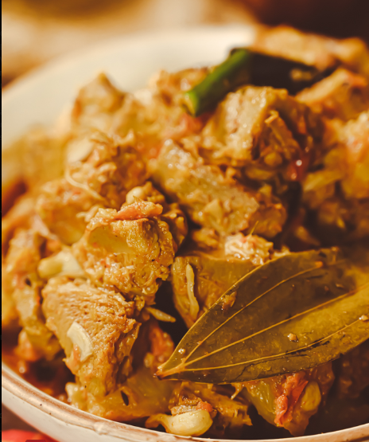
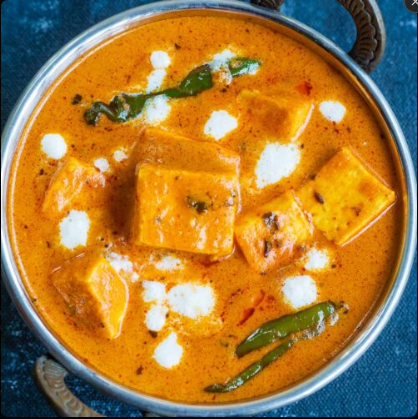
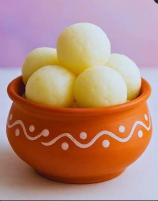
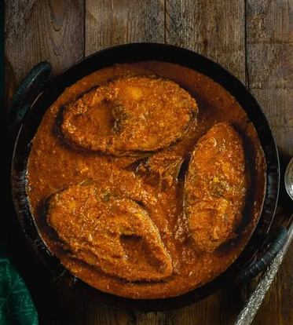
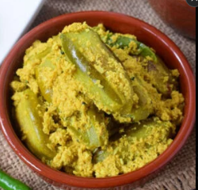
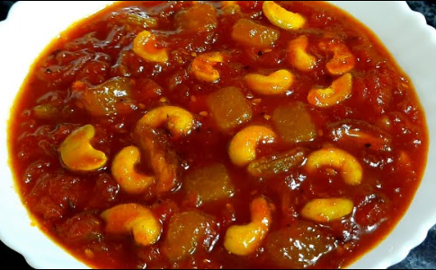
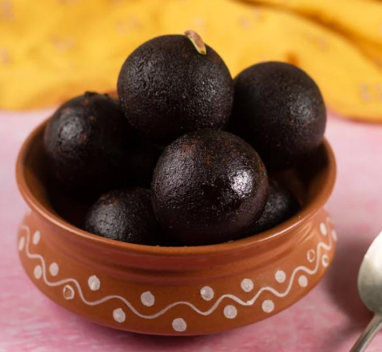

Maha Bhoj
One clear picture of exactly what's for dinner each night, and what you can grab on your feet in between — celebrating 15 glorious years of Utsov.
Royal Bengali
Grand Feast
শনিবারের নৈশভোজ
Opening night's seated dinner — nine dishes that built Bengal's reputation as a land of unforgettable food, served exactly as our grandmothers intended.

Long-grain and fluffy — the quiet hero that carries every curry home.

Yellow lentils simmered with ghee and cumin until silky and comforting.

Potatoes sliced paper-thin and fried to a golden crackle.

Tiger prawns bathed in a whisper-light coconut cream — once savored by zamindars and British sahibs alike.

Slow-cooked for hours until the gravy clings dark and glossy to every bite — Kolkata's most-loved indulgence.

Bengal's "vegetarian mutton" — raw jackfruit in a fragrant spiced curry.

Cottage cheese cubes in a velvety tomato-cashew gravy, rich enough to feel like a celebration.

Sweet, sour, and just a little fiery — green mango chutney to close the plate.

Spongy chhena balls soaked in light sugar syrup, served warm — the sweetest full stop to the feast.
Royal Bengali
Fusion Feast
রবিবারের নৈশভোজ
Farewell night's seated dinner brings a Nawabi twist to the Bengali table — bold, spiced, and built for a night of goodbyes and gratitude.

Simple, fluffy, and endlessly comforting — the canvas for tonight's flavors.

Lentil wafers puffed and fried to a delicate crunch — the perfect starter bite.

Chicken slow-roasted in a rich, nutty, saffron-kissed gravy — a Nawabi classic reborn for farewell night.

Rohu fish simmered in a golden onion-tomato gravy with warm spices — reserved for special occasions.

Pointed gourd cooked in a creamy poppy-seed paste — humble, earthy, and deeply Bengali.
Seasonal vegetables in spiced gram-flour batter, fried golden — the perfect evening bite.

Delicate vegetable dumplings simmering in a royal, creamy curry — Lucknow's Nawabs would approve.

Sun-dried mango leather melted into a sweet-tart tomato chutney — a Bengali specialty.

Dark, deep-fried khoya dumplings drenched in syrup — gulab jamun's bolder Bengali cousin.
Kolkata-Style
Snacks & Extras
কলকাতার স্ট্রিট ফুড
15 iconic snacks celebrating 15 years of Utsov — priced reasonably, sold fresh between performances. Not included with your pass; purchased separately at the counter.

Crisp hollow puris, spiced tamarind water, one perfect burst of flavor — Kolkata's favorite ritual.

Puffed rice tossed with mustard oil, peanuts, chanachur, and lime — nostalgia in a paper cone.

Flaky pastry stuffed with spiced cauliflower and potato — Bengal's answer to the samosa.

Spiced mashed jackfruit, breaded and fried golden — a monsoon-evening favorite.

Banana flower, coconut, and spices shaped into a crisp cutlet — rare outside Bengal.

Mashed spiced potato, crumb-fried to a crackling shell — the ultimate teatime companion.

Beets, carrots, and peas bound and fried crisp — a Kolkata tea-stall classic.

Flaked fish blended with potatoes and spices, fried to golden perfection.

Hard-boiled eggs wrapped in a spiced mince coating and deep-fried — a beloved Anglo-Indian Calcutta classic.
Fish fillets marinated in mustard and coated in breadcrumbs, fried till crisp — a Bengali seaside staple.

Minced chicken kebabs grilled in a delicate lattice of egg — smoky, tender, full of flavor.

A rotating selection of Bengal's finest mishti — no celebration ends without something sweet.

Betel leaf folded around sweet fillings, fennel, and gulkand — the perfect after-meal ritual.

Steaming cups of cha, brewed strong — complimentary, because every great conversation starts over tea.

For those who prefer their pick-me-up dark and bold — complimentary, on the house.
Dish photography courtesy of Wikimedia Commons contributors, shared under Creative Commons licenses.